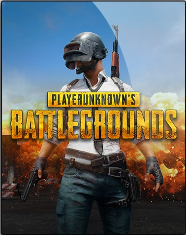

Site Name
Gaming
Bring your A game!
| Icon | Game Name | Description |
|---|---|---|
 |
Dota 2 | Dota 2 is a free-to-play multiplayer online battle arena (MOBA) video game developed and published by Valve Corporation. The game is the stand-alone sequel to Defense of the Ancients (DotA), which was a community-created mod for Blizzard Entertainment's Warcraft III: Reign of Chaos and its expansion pack, The Frozen Throne. Dota 2 is played in matches between two teams of five players, with each team occupying and defending their own separate base on the map. Each of the ten players independently controls a powerful character, known as a "hero", who all have unique abilities and differing styles of play. During a match, players collect experience points and items for their heroes to successfully battle the opposing team's heroes, who attempt to do the same to them. A team wins by being the first to destroy a large structure located in the opposing team's base, called the "Ancient". |
 |
League of Legends | League of Legends is a 3D, third-person multiplayer online battle arena (MOBA) game. The game consists of 3 current running game modes: Summoner's Rift, Twisted Treeline, and Howling Abyss. Another game mode, The Crystal Scar, has since been removed. Players compete in matches, lasting anywhere from 20 to 60 minutes on average. In each game mode teams work together to achieve a victory condition, typically destroying the core building (called the Nexus) in the enemy team's base after bypassing a line of defensive structures called turrets, or towers. |
|  | Player Unkown Battle Grounds | Battlegrounds is a player versus player (PvP) action game in which up to one hundred players fight in a battle royale, a type of large-scale last man standing deathmatch where players fight to remain the last alive. Players can choose to enter the match solo, or with a small team of up to four people. In either case, the last person or team left alive wins the match. |
| Counter Strike: Global Offensive | Global Offensive, like prior games in the Counter-Strike series, is an objective-based, multiplayer first-person shooter. Two opposing teams, known as the Terrorists and the Counter Terrorists, compete in game modes to complete objectives, such as securing a location to plant or defuse a bomb and rescuing or guarding hostages. At the end of each round, players are rewarded based on their individual performance with in-game currency to spend on more powerful weapons in subsequent rounds. Winning rounds results in more money than losing, and completing objectives such as killing enemy players gives cash bonuses. Uncooperative actions, such as killing teammates, results in a penalty. |
|
| Rules of Survival | Rules of Survival is a Battle Royale game which pits 120 players against each other in an island. Players are dropped off an airplane and must find weapons and supplies to survive. Players are eventually forced to face each other off as the safe zone shrinks. Prolonged exposure outside of the safe zone will eventually lead to death. The last man standing wins. It's a fight to the death and this is your battle. Fight your way to freedom or camp out in a bush, no one judges your methods but this is the Rules of Survival |
|
| Ragnarok Online | Ragnarok Online is divided into a series of maps on two major continents, each of which has its own terrain and native monsters, though many monsters are present in multiple regions. Transportation between maps requires loading the new map and monsters are unable to travel from one map to another unless directly associated with the player such as a pet, mount, or hireling. |
| Assasin's Creed : Origins | Assassin's Creed Origins is an action-adventure stealth game played from a third-person perspective. Players complete quests—linear scenarios with set objectives—to progress through the story, earn experience points, and acquire new skills. Outside of quests, the player can freely roam the open world environment on foot, horseback, camel-back or boat to explore locations, complete optional side-quests and unlock weapons and equipment. |
|
| Call Of Duty | a first-person shooter, Call of Duty places the player in control of an infantry soldier who makes use of various authentic World War II firearms in combat. Each mission features a series of objectives which are marked on the heads-up display's compass; the player must complete all objectives to advance to the next mission. The player can save and load at any time, rather than the checkpoint system utilized in later Call of Duty games. |
|
 |
Grand Theft Auto IV | Grand Theft Auto IV is an action-adventure game played from a third-person perspective. Players complete missions—linear scenarios with set objectives—to progress through the story. It is possible to have several active missions running at one time, as some missions require players to wait for further instructions or events. Outside of missions, players can freely roam the game's open world, and have the ability to complete optional side missions. Composed of the fictional city of Liberty City, the world of Grand Theft Auto IV is larger in area than most earlier entries in the series. At the beginning of the game, players can only explore the first island–composed of Dukes and Broker–with all other islands unlocking as the story progresses. |
 |
Grand Theft Auto: Vice City | Grand Theft Auto: Vice City is an action-adventure game played from a third-person perspective. The player controls the criminal Tommy Vercetti and completes missions—linear scenarios with set objectives—to progress through the story. It is possible to have several active missions running at one time, as some missions require the player to wait for further instructions or events. Outside of missions, the player can freely roam the game's open world and has the ability to complete optional side missions. Composed of two main islands and several smaller areas, the world is much larger in area than earlier entries in the series. The islands are unlocked for the player as the story progresses. |
 |
Grand Theft Auto: San Andreas | Grand Theft Auto: San Andreas is an action-adventure game with role-playing and stealth elements. Structured similarly to the previous two games in the series, the core gameplay consists of elements in a third-person shooter and a driving game, affording the player a large, open world environment in which to move around. On foot, the player's character is capable of walking, running, sprinting, swimming, climbing and jumping as well as using weapons and various forms of hand-to-hand combat. The player can drive a variety of vehicles, including automobiles, buses, semis, boats, fixed-wing aircraft, helicopters, trains, tanks, motorcycles and bikes. The player may also import vehicles in addition to stealing them. |
| Need for Speed | Almost all of the games in the NFS series employ the same fundamental rules and similar mechanics: the player controls a race car in a variety of races, the goal being to win the race. In the tournament/career mode, the player must win a series of races in order to unlock vehicles and tracks. Before each race, the player chooses a vehicle, and has the option of selecting either an automatic or manual transmission. All games in the series have some form of multiplayer mode allowing players to race one another via a split screen, a LAN or the Internet. |